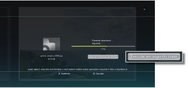
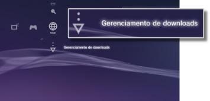

Rede > Download em segundo plano
Download em segundo plano
O download em segundo plano é um recurso que permite realizar outras operações ao fazer o download de diversos itens de dados ou arquivos grandes. Esse recurso estará disponível apenas quando a opção [Executar em segundo plano] for exibida na tela mostrada durante o download do conteúdo.

Dicas
- Você pode não conseguir fazer o download em segundo plano dependendo do tipo dos dados ou do número de itens de dados sendo baixados.
- A instalação pode precisar utilizar dados baixados, tais como jogos ou arquivos de vídeo. Quando o download terminar, os dados que precisarem ser instalados serão exibidos como
 ou
ou  em cada categoria.
em cada categoria. - O download em segundo plano pode não estar disponível quando houver dados não instalados no armazenamento do sistema.
- Se o sistema PS3™ for desligado durante um download em segundo plano, o status do download será salvo. O download será reiniciado automaticamente na próxima vez que o sistema PS3™ for ligado e conectado à Internet.
- Um download em segundo plano será parado temporariamente quando qualquer uma das seguintes operações for realizada. O download será reiniciado automaticamente assim que a operação terminar.
- - Ao reproduzir um Blu-ray Disc ou DVD
- - Ao utilizar os recursos de rede dos jogos on-line *
- - Ao iniciar software no formato PlayStation®2
- - Ao utilizar o bate-papo de voz / vídeo
- - Ao realizar uma atualização do sistema
- - Ao ajustar a configuração de itens em
 (Configurações)
(Configurações)
*
Enquanto um jogo estiver em processo de finalização, o download em segundo plano será parado temporariamente.
Avisos
- Alguns títulos de software no formato PlayStation®2 ou PlayStation® podem apresentar desempenhos diferentes no sistema PS3™ em comparação com os sistemas PlayStation®2 ou PlayStation®, ou podem não apresentar um desempenho adequado no sistema PS3™.
- Além disso, discos no formato PlayStation®2 não podem ser reproduzidos em alguns sistemas PS3™. Para obter detalhes, consulte [Tipos de discos reproduzíveis], visite o site da SIE de sua região ou leia a documentação incluída com seu sistema PS3™.
Gerenciamento de downloads
Esta opção será exibida apenas quando um download em segundo plano estiver sendo realizado. Você pode verificar o status do download ou cancelar o download dos dados sendo baixados em  (Navegador de Internet) ou
(Navegador de Internet) ou  (PlayStation®Store). Selecione
(PlayStation®Store). Selecione  (Gerenciamento de downloads) em
(Gerenciamento de downloads) em  (Rede).
(Rede).

Verificando o status do download
Selecione o ícone dos dados para os quais você deseja verificar o status do download, pressione o botão  e, então, selecione [Status] no menu de opções.
e, então, selecione [Status] no menu de opções.
Cancelando o download
Selecione o ícone dos dados para os quais você deseja cancelar o download, pressione o botão e, então, selecione [Cancelar] no menu de opções. Depois do download ser cancelado, ele será apagado de (Gerenciamento de downloads).
Pausando / reiniciando os downloads
Selecione o ícone dos dados para os quais você deseja pausar o download, pressione o botão e, então, selecione [Pausar] no menu de opções. Para reiniciar o download, pressione o botão novamente e, então, selecione [Retomar] no menu de opções.
Dicas
- Se você pausar o download,
 será exibido com o ícone.
será exibido com o ícone. - Se você pausar um download ao baixar diversos itens de dados, o download do próximo item de dados será iniciado automaticamente.
Pausar todos os downloads
Selecione o ícone de qualquer download, pressione o botão e, então, selecione [Pausar tudo] no menu de opções.
Reiniciar todos os downloads
Selecione o ícone de qualquer download, pressione o botão e, então, selecione [Retomar tudo] no menu de opções.